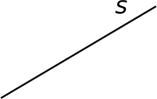
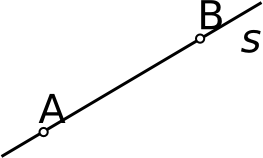

Sirge, sirglõik, murdjoon

Sirge
Sirge
(
sirgjoon
) on lõpmata pikk kõverusteta joon.

Sirglõik
Sirgl
õik
moodustub kahe punkti sirgjoonega ühendamisel.
Murdjoon
Murdjoon
koosneb punkte järjest ühendavatest lõikudest, kusjuures kolm järjestikust punkti ei asu ühel sirgel.